Objectif du role
La direction suit l'activite globale : projets, chantiers, presences, rapports, photos, perimetres GS et logs. Elle consulte surtout, filtre et telecharge les informations utiles au pilotage.
La direction suit l'activite globale : projets, chantiers, presences, rapports, photos, perimetres GS et logs. Elle consulte surtout, filtre et telecharge les informations utiles au pilotage.
Web : Tableau de bord global, Tous les projets, Presences / RH, Rapports terrain, Galerie photos, Perimetres GS, Logs de suppression et Profil.
Mobile : Accueil, Projets, Galerie, Perimetres GS et Profil.
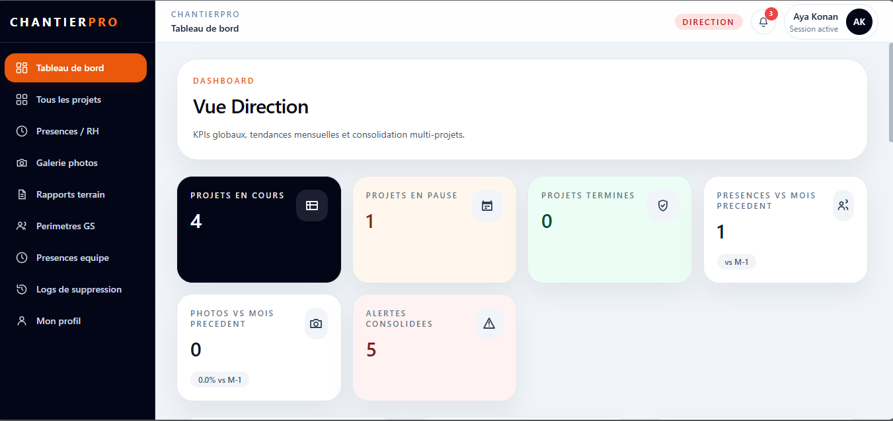
assets/dir-web-dashboard.png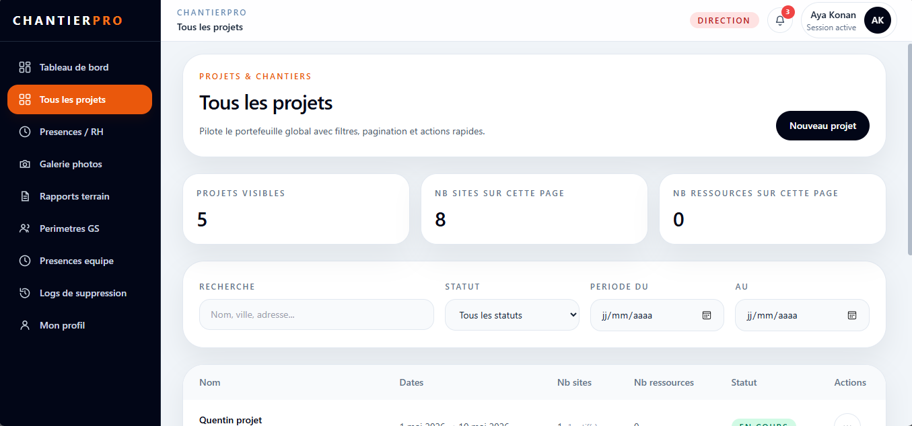
assets/dir-web-tous-projets.png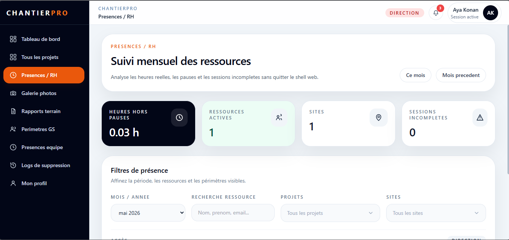
assets/dir-web-presences-rh.png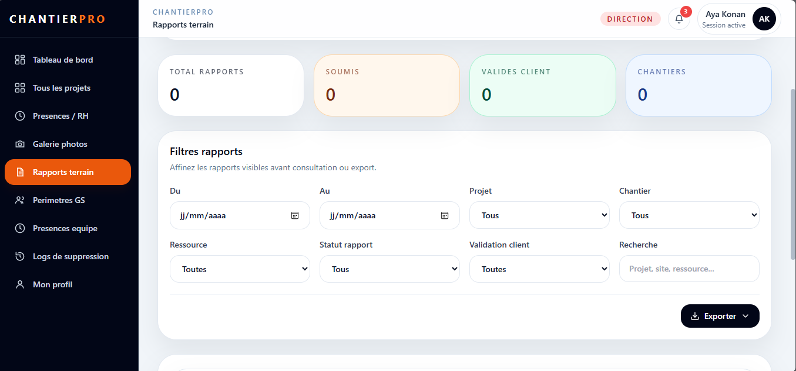
assets/dir-web-rapports.png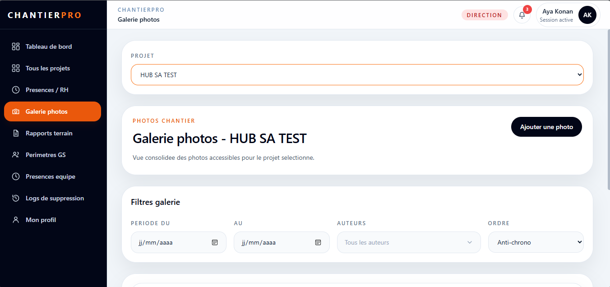
assets/dir-web-galerie.png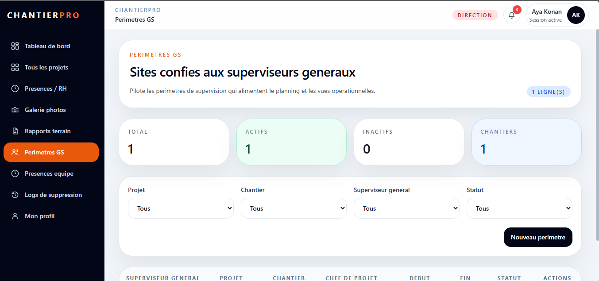
assets/dir-web-perimetres-gs.png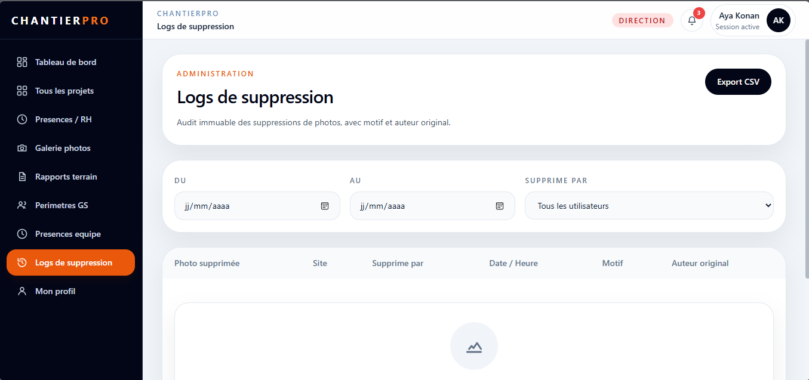
assets/dir-web-logs.png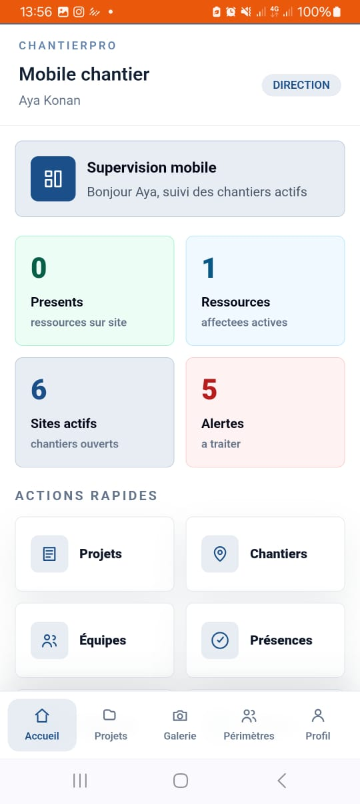
assets/dir-mobile-accueil.jpeg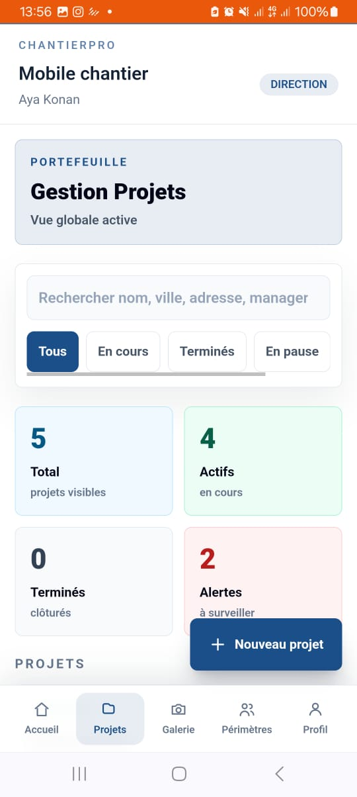
assets/dir-mobile-projets.jpeg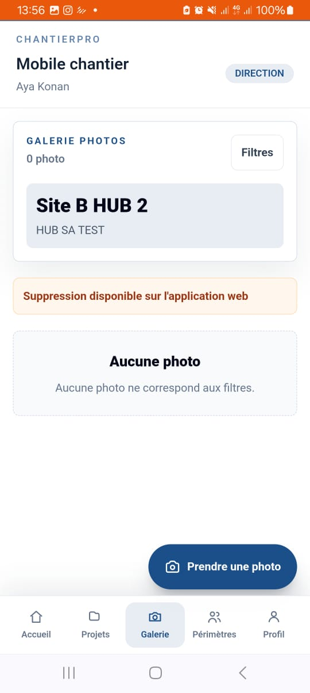
assets/dir-mobile-galerie.jpeg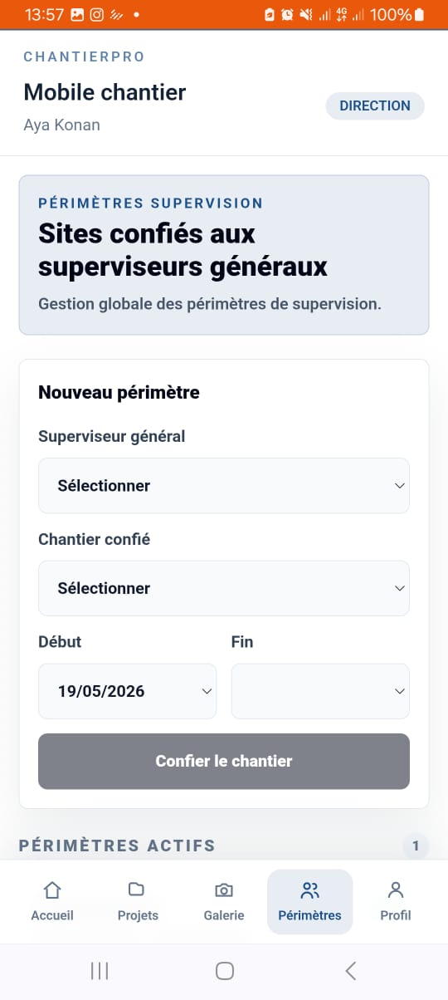
assets/dir-mobile-perimetres-gs.jpeg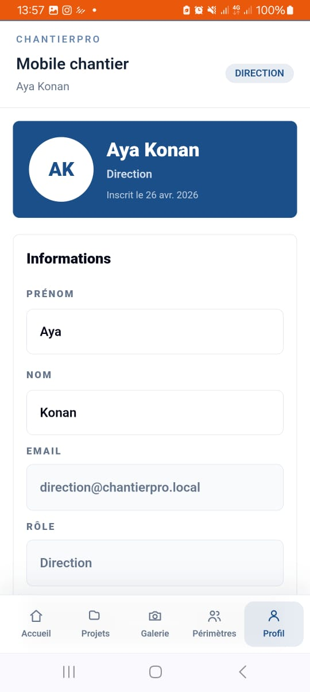
assets/dir-mobile-profil.jpeg